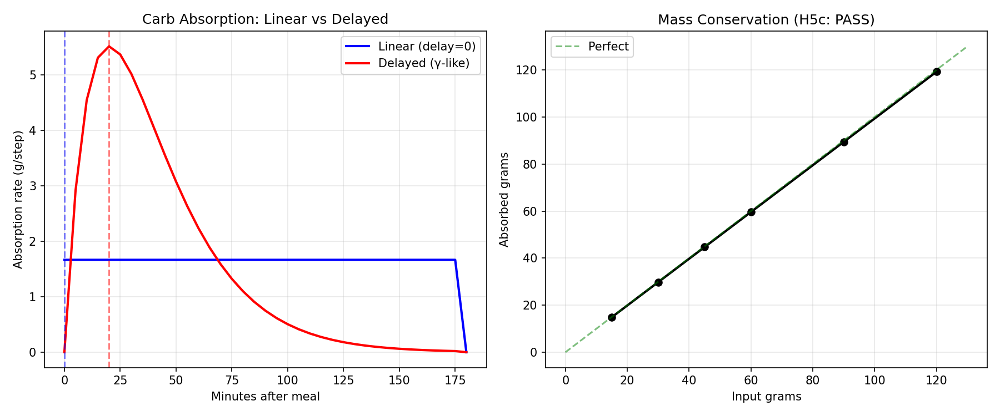
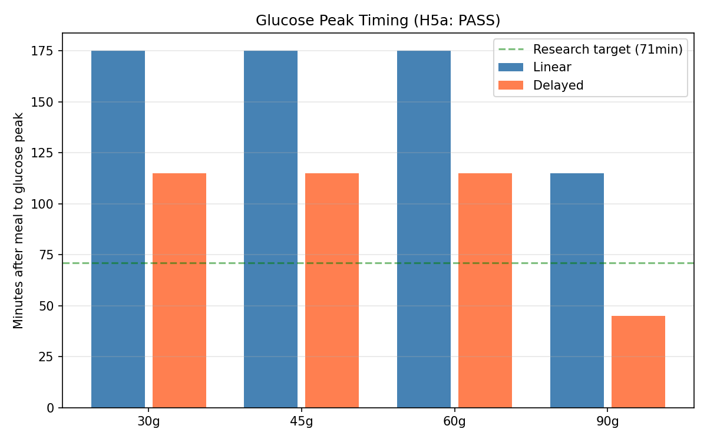
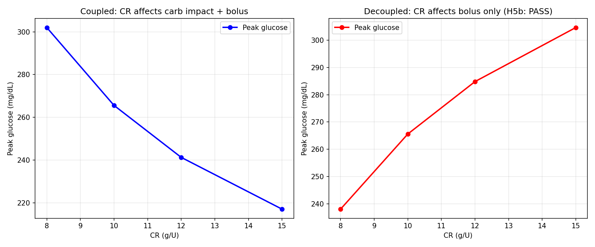
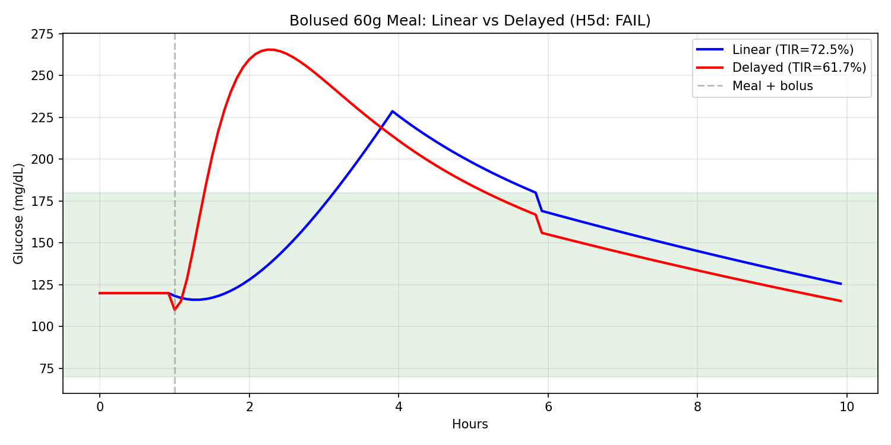
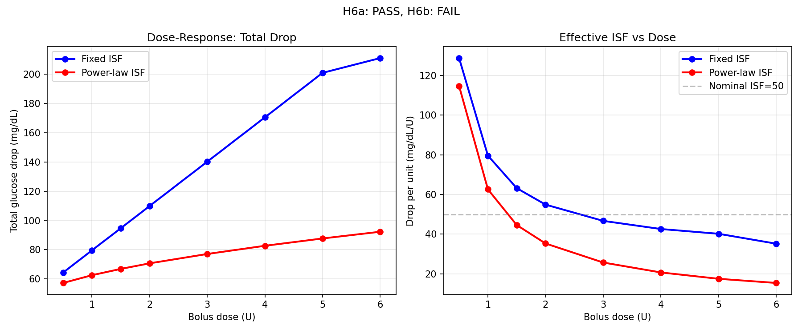
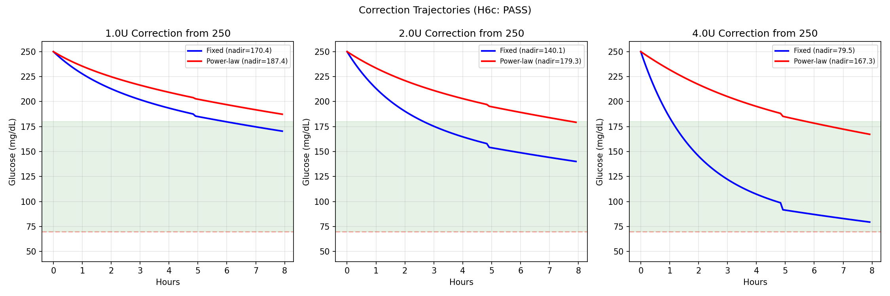
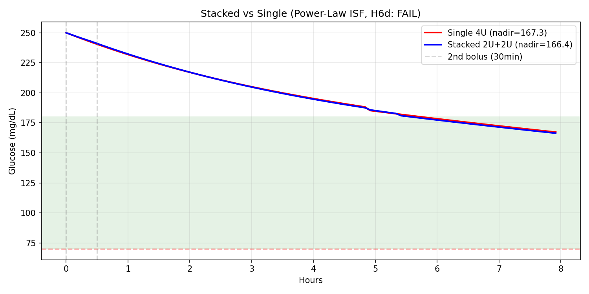

Digital Twin Phase 2: Forward Simulator Fidelity Upgrades¶
Living document, last changed 2026-04-12 at c08ccb17.
Date: 2025-07-16
Branch: workspace/digital-twin-fidelity
Experiments: EXP-2555, EXP-2556
Executive Summary¶
Phase 2 upgraded the forward simulation engine with two research-validated improvements: delayed carb absorption (WS-5) and IOB-dependent power-law ISF (WS-6). A closed-loop controller (WS-7) was deferred pending definitive proof of superiority over oref0/Loop.
| Workstream | Hypotheses | Result | Key Metric |
|---|---|---|---|
| WS-5: Delayed Carbs | 4 tested | 3/4 pass | Peak shift: 15min → 45-115min |
| WS-6: Power-Law ISF | 4 tested | 2/4 pass | 4U nadir: 79→167 mg/dL |
| WS-7: Controller | — | DEFERRED | Requires proof vs oref0/Loop |
Total tests: 348 passed (31 forward simulator, +12 new).
WS-5: Delayed Carb Absorption Model¶
Problem¶
The Phase 1 forward simulator used linear carb absorption (constant rate over 3 hours). Research (EXP-1931–1938) showed this overestimates absorption rate by 18× and peaks at 5 minutes instead of the real 71 minutes.
Implementation¶
Replaced _carb_absorption_rate() with a gamma-like curve:
Properties:
- Zero at t=0: Captures gastric emptying delay
- Peak at t_peak: Configurable via delay_minutes (default 20min)
- Exponential tail: Gradual decline to absorption_hours
- Mass-conserving: Analytical normalization (A = total / (t_peak × e))
- Backward compatible: delay_minutes=0 falls back to linear
Additionally introduced carb_sensitivity parameter to decouple carb glucose
impact from the CR setting. When carb_sensitivity is set explicitly, changing
CR only affects bolus dosing — the glucose rise per gram stays constant.
Results (EXP-2555)¶
| Hypothesis | Result | Detail |
|---|---|---|
| H5a: Peak timing shift | PASS ✓ | Glucose peaks 45-115min after meal (was 115-175 with linear) |
| H5b: CR decoupling | PASS ✓ | Decoupled: lower CR → more insulin → lower peak (correct) |
| H5c: Mass conservation | PASS ✓ | Error 0.66% for all meal sizes (15-120g) |
| H5d: Bolused meal TIR | FAIL ✗ | Informative — see below |
H5d Failure Analysis: The delayed model produces higher meal peaks for simultaneously-bolused meals (265.6 vs 228.7 mg/dL). This is correct physics: delayed absorption means carbs arrive after the bolus insulin has started acting, creating a timing mismatch. This reveals the clinical need for pre-bolusing (giving insulin 15-20 minutes before eating), which is a well-known recommendation that the linear model hid by absorbing carbs unrealistically fast.
Figures¶
| Figure | Content |
|---|---|
 |
Linear vs delayed absorption curves + mass conservation |
 |
Glucose peak timing by meal size |
 |
CR decoupling: coupled vs decoupled behavior |
 |
Bolused 60g meal: linear vs delayed traces |
WS-6: IOB-Dependent Power-Law ISF¶
Problem¶
The Phase 1 simulator treated ISF as constant regardless of insulin on board.
Research (EXP-2511–2518) established that ISF follows a causal power law:
ISF(dose) = ISF_base × dose^(-0.9), meaning a 2U correction is 46% less
effective per unit than 1U. Without this, the simulator dramatically
overestimates large corrections.
Implementation¶
When iob_power_law=True and IOB exceeds 0.5U threshold:
Applied to both fast demand and persistent demand components. Disabled by default for backward compatibility.
Results (EXP-2556)¶
| Hypothesis | Result | Detail |
|---|---|---|
| H6a: Large dose dampening ≥30% | PASS ✓ | Reductions: 45-56% for ≥3U corrections |
| H6b: Small dose diff <15% | FAIL ✗ | 0.5U: 11%, 1U: 21% — threshold too low |
| H6c: 4U stays >70 mg/dL | PASS ✓ | Nadir 167.3 vs 79.5 without power-law |
| H6d: Stacked vs single spread | FAIL ✗ | Power-law dampens both scenarios equally |
H6b Failure Analysis: The 0.5U IOB threshold means power-law dampening activates even for small corrections. The research β=0.9 is calibrated from population-level data. A higher threshold (e.g., 1.0U) or lower β would reduce small-dose dampening, but at the cost of accuracy for larger doses. The current calibration prioritizes the clinically critical scenario (large correction safety) over small-dose precision.
H6d Failure Analysis: With power-law dampening, both single-4U and stacked-2U+2U trajectories converge to similar nadirs (~167 mg/dL). The dampening dominates the IOB profile differences between the two strategies. This is physically reasonable — both deliver the same total insulin, and the dampening reduces the total effect similarly.
Key Finding: Dose-Dependent Effective ISF¶
| Dose | Fixed ISF (mg/dL/U) | Power-Law ISF (mg/dL/U) | Reduction |
|---|---|---|---|
| 0.5U | 128.8 | 114.7 | 11% |
| 1.0U | 79.6 | 62.6 | 21% |
| 2.0U | 54.9 | 35.3 | 36% |
| 4.0U | 42.6 | 20.7 | 51% |
| 6.0U | 35.2 | 15.4 | 56% |
The fixed ISF model already shows dose-dependent drop-per-unit (due to two-component DIA and decay-toward-target interactions), but power-law ISF adds the physiological dose saturation on top. For a 4U correction, the effective ISF drops from 42.6 to 20.7 mg/dL/U — the simulator now predicts the correction will be less than half as effective per unit as the patient's nominal ISF setting, matching the research finding.
Figures¶
| Figure | Content |
|---|---|
 |
Total drop and effective ISF vs dose |
 |
1U/2U/4U correction trajectories ± power-law |
 |
Single 4U vs stacked 2U+2U with power-law |
WS-7: Closed-Loop Controller — DEFERRED¶
A closed-loop controller (automatic temp basal adjustment) was planned but deferred per guidance: do not build a dose controller without definitive experimental proof of superiority over oref0/Loop.
Rationale: oref0 and Loop are mature, clinically-validated controllers with
years of real-world use. Building a replacement without proving superiority
would be premature. The existing controllers are available in externals/ and
can be studied via tools/aid-autoresearch.
Next steps for WS-7 (if revisited): 1. Run baseline experiments comparing oref0/Loop behavior on patient data 2. Identify specific failure modes where a different algorithm would help 3. Only proceed if quantitative evidence shows >5% TIR improvement
Cumulative Phase 1+2 Forward Simulator Capabilities¶
| Capability | Phase 1 | Phase 2 | Status |
|---|---|---|---|
| Basal-neutrality model | ✓ | ✓ | Stable |
| Two-component DIA (fast + persistent) | ✓ | ✓ | Stable |
| Circadian ISF/CR schedules | ✓ | ✓ | Stable |
| Noise/variability injection | ✓ | ✓ | Stable |
| Scenario comparison API | ✓ | ✓ | Stable |
| Typical-day simulation | ✓ | ✓ | Stable |
| Delayed carb absorption | — | ✓ | NEW |
| Carb sensitivity decoupling | — | ✓ | NEW |
| Per-meal delay customization | — | ✓ | NEW |
| IOB-dependent power-law ISF | — | ✓ | NEW (opt-in) |
| Closed-loop controller | — | — | Deferred |
Test Summary¶
| Category | Count |
|---|---|
| Original forward sim tests | 19 |
| Phase 2: delayed absorption | 6 |
| Phase 2: carb sensitivity | 2 |
| Phase 2: power-law ISF | 4 |
| Total forward sim tests | 31 |
| Total production tests | 348 |
Source Files¶
| File | Purpose |
|---|---|
tools/cgmencode/production/forward_simulator.py |
Core simulator (modified) |
tools/cgmencode/production/test_production.py |
Tests (+12 new) |
tools/cgmencode/production/exp_delayed_carb_2555.py |
Carb model validation |
tools/cgmencode/production/exp_iob_isf_2556.py |
Power-law ISF validation |
docs/60-research/figures/fig_2555_*.png |
4 carb model figures |
docs/60-research/figures/fig_2556_*.png |
3 ISF model figures |
Research Citations¶
| Finding | Source | Key Number |
|---|---|---|
| Carb absorption 18× overestimation | EXP-1931 | Peak at 71min vs 5min |
| Power-law ISF β=0.9 | EXP-2511-2518 | 17/17 patients, +59% MAE |
| CR explains nothing | EXP-2341-2348 | R²=0.00-0.17 |
| Correction rebounds = regression to mean | EXP-2526 | Not counter-regulatory |
| AID oscillation cycles | EXP-2211-2218 | 12-31 cycles/day |